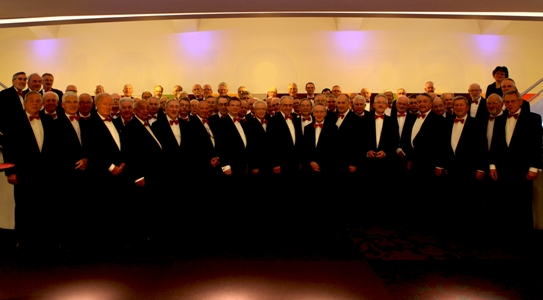

Programma 2013
Klik op het programma voor meer informatie over de deelnemers.
Zaterdag 1 juni
Hoofdpodium
13.30 uur
Woensels Muziekcorps
14.40 uur
Symfonieorkest Ensuite
15.50 uur
Veldhovens Mannenkoor
16.55 uur
Philips Symfonisch Blaasorkest
18.25 uur
Gemengd koor Vokollage
19.30 uur
Brabants Fanfare Orkest
20.45 uur
Collegium Vocale Eindhoven
21.55 uur
Harmonieorkest Auletes
Klassiek Café
13.00 uur
Symfonisch Ensemble Eindhoven
14.10 uur
Het Ambitus Kwartet
15.20 uur
Brabantzangers
16.25 uur
Sambuca
17.35 uur
Exprezzo Blazersensemble
19.00 uur
No-Way
20.15 uur
Arundo Kwintet
21.25 uur
The Embrassibles
Muziektuin
13.00 uur
Klezmajeur
13.45 uur
Petri'a
14.20 uur
Amice
15.00 uur
Fluitensemble CKE
Workshop: 'een fluitje van een cent'
15.40 uur
Het Dommelsch Trio
16.25 uur
Didgeridoo en Percussie demo
16.50 uur
Workshop: Djembé
17.30 uur
Workshop: saxofoon
19.00 uur
Angklung Eindhoven
19.25 uur
Workshop: Angklung
20.15 uur
Senior Jazzmen
21.25 uur
Heldens Koper Ensemble



Aan de informatie op deze pagina kunnen geen rechten ontleend worden. Wijzigingen in het programma zijn voorbehouden.